Ceremonia de Apertura
 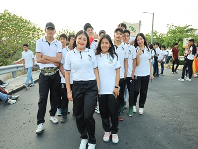
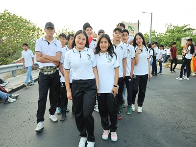

 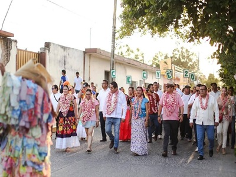
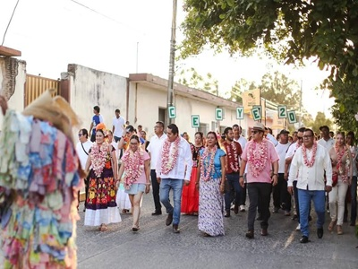
 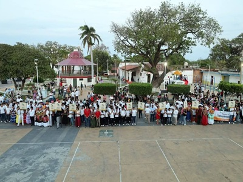
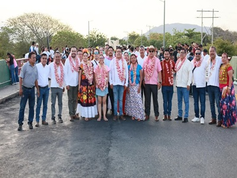
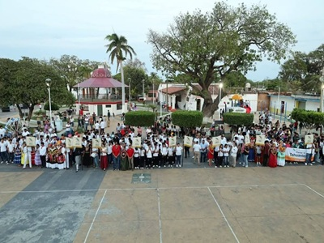
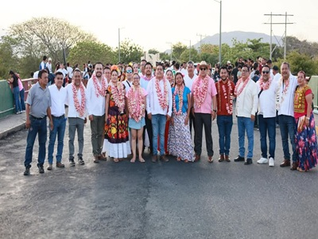
La muestra cultural del Cecyteo (Colegio de Estudios Científicos y Tecnológicos del Estado de Oaxaca) es un evento que celebra la diversidad y riqueza cultural de la región, con el propósito de fomentar el desarrollo integral de los estudiantes, promoviendo la cultura, el civismo, el deporte y la convivencia entre instituciones educativas.
Es un espacio de encuentro y participación que promueve el talento, la creatividad, el trabajo en equipo y el espíritu competitivo de su comunidad estudiantil. Durante este evento se realizan diversas actividades en las que los estudiantes pueden demostrar sus habilidades en distintas áreas.
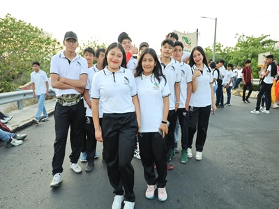
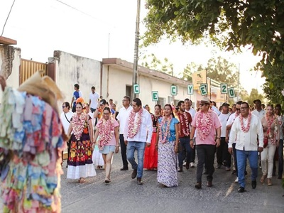
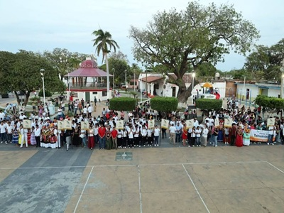
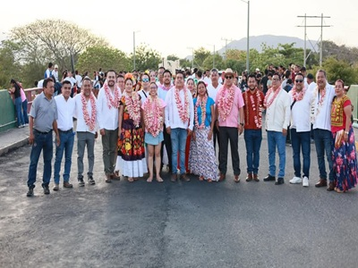
El EMSAD 67 fue uno de los participantes destacados del evento.
 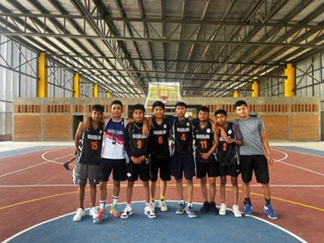
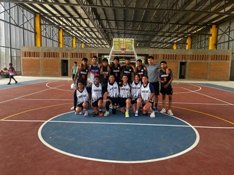
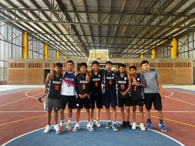
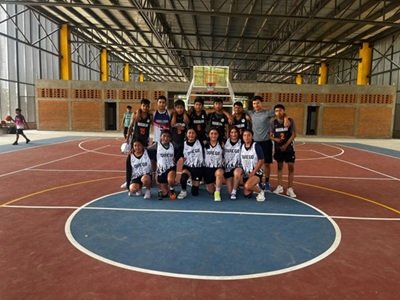
En el ámbito deportivo, se llevan a cabo competencias de básquetbol, fútbol, voleibol y atletismo, fomentando la disciplina, el esfuerzo físico y el juego limpio. Estas actividades permiten fortalecer el compañerismo y el sentido de pertenencia entre los alumnos.
El EMSAD 67 mostró un gran trabajo en equipo.


 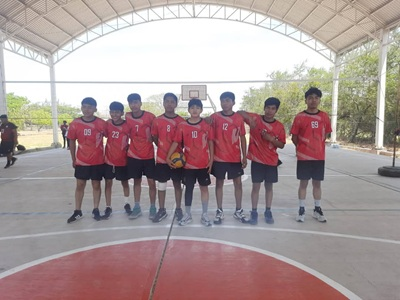
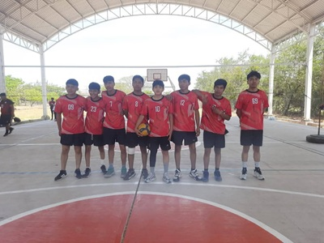
Los equipos de voleibol mostraron un gran desempeño.
En la parte cultural, se presentan demostraciones de danza, canto, declamación, oratoria y ajedrez, donde los participantes expresan sus capacidades artísticas, su pensamiento crítico y su talento individual. Estas expresiones reflejan la riqueza cultural y el compromiso con la formación integral que promueve el CECyTEO.


Los alumnos nos sorprendieron con sus maravillosos bailes.